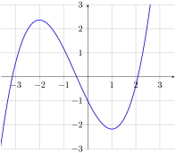
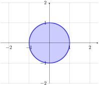
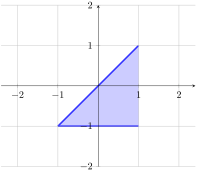
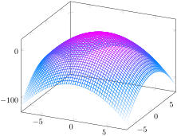
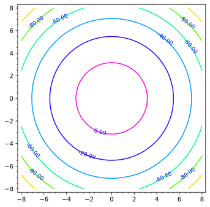
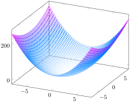
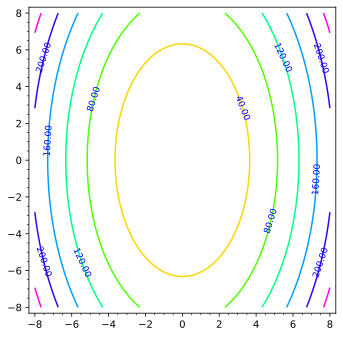
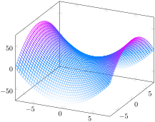
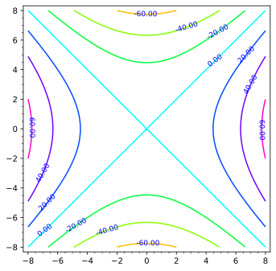

Subsection2.5.1Review of Single-Variable Optimization
Activity2.5.1.
Let \(f(x)\) be the cubic function whose graph is shown below.

(a)
Which of the following statements is true of the local extrema or relative extrema of \(f\text{?}\)
\(f\) does not have any local extrema.
\(f\) has a local max at \(x = -2\) and a local min at \(x = 1\text{.}\)
\(f\) has a local max at \(x = 1\) and a local min at \(x = -2\text{.}\)
\(f\) has a local max at \(x = -2\) and a local min at \(x = 0\text{.}\)
(b)
Which of the following statements is true of the global extrema or absolute extrema of \(f\) on the interval \([0, 2]\text{?}\)
\(f\) has a global min at \(x = 0\) and global max at \(x = 2\text{.}\)
\(f\) has a global min at \(x = 2\) and global max at \(x = 0\text{.}\)
\(f\) has a global min at \(x = 1\) and global max at \(x = 2\text{.}\)
\(f\) has a global min at \(x = 1\) and no global max.
(c)
Which of the following statements is true of the global extrema or absolute extrema of \(f\) on the interval \([0, 2)\text{?}\)
\(f\) has a global min at \(x = 0\) and global max at \(x = 2\text{.}\)
\(f\) has a global min at \(x = 2\) and global max at \(x = 0\text{.}\)
\(f\) has a global min at \(x = 1\) and global max at \(x = 2\text{.}\)
\(f\) has a global min at \(x = 1\) and no global max.
(d)
Which of the following statements is true of the global extrema or absolute extrema of \(f\) on the interval \((-\infty, 2)\text{?}\)
\(f\) does not have any global extrema.
\(f\) has a global max at \(x = -2\) and a global min at \(x = 1\text{.}\)
\(f\) has a global max at \(x = -2\) and no global min.
\(f\) has a global max at \(x = 1\) and a global min at \(x = -4\text{.}\)
When optimizing a function of a single variable, we have several tools at our disposal which are straightforward to apply. The Extreme Value Theorem states that a continuous function will always have a global max or min when considered over a closed and bounded interval. (However, as we saw above it may or may may not have a global extrema when the interval is not closed or not bounded.) We also know that the global extrema will occur either at critical points (i.e. values of \(x\) where \(f'(x) = 0\) or \(f'(x)\) is undefined) or at the endpoints of the closed interval. Thus we may find the global extrema by evaluating \(f\) at the critical points and the endpoints of the interval, and then locating the largest and smallest values. (This is known as the closed interval method.)
Definition2.5.1.
Let \(f\) be a function of two variables \(x\) and \(y\text{.}\)
The function \(f\) has a local maximum at a point \((x_0,y_0)\) provided that \(f(x,y) \leq f(x_0,y_0)\) for all points \((x,y)\) near \((x_0,y_0)\text{.}\) In this situation we say that \(f(x_0, y_0)\) is a local maximum value.
The function \(f\) has a local minimum at a point \((x_0,y_0)\) provided that \(f(x,y) \geq f(x_0,y_0)\) for all points \((x,y)\) near \((x_0,y_0)\text{.}\) In this situation we say that \(f(x_0, y_0)\) is a local minimum value.
An absolute maximum point is a point \((x_0,y_0)\) for which \(f(x,y)\leq f(x_0,y_0)\) for all points \((x,y)\) in the domain of \(f\text{.}\) The value of \(f\) at an absolute maximum point is the maximum value of \(f\text{.}\)
An absolute minimum point is a point such that \(f(x,y) \geq f(x_0,y_0)\) for all points \((x,y)\) in the domain of \(f\text{.}\) The value of \(f\) at an absolute minimum point is the minimum value of \(f\text{.}\)
The same principles apply when locating the global extrema of a function of two variables. However, we must extend the notions of closed and bounded interval, endpoint, and critical point appropriately to \(\R^n\text{.}\)
Subsection2.5.2Closed and Bounded Subsets of \(\R^n\)
Let \((x_0,y_0)\) be a fixed point in \(\R^2\) and let \(r\) be a positive real number. We will denote the set of all points in \(\R^2\) that are within a distance \(r\) of \((x_0,y_0)\) by
These sets are called open disks or open balls. Open disks in \(\R^n\) are defined similarly: \(B_r(\vx_0) = \{ \vx \in \R^n : |\vx - \vx_0| \lt r \}\text{.}\) A subset \(S\) of \(\R^2\) is said to be open if for every point \((x,y) \in S\) there exists a positive real number \(r\) such that \(B_r(x,y) \subseteq S\text{.}\) A subset \(S\) of \(\R^2\) is said to be closed if its complement is open.
Activity2.5.2.
Let \(S\) be the subset of \(\R^2\) defined by \(x^2 + y^2 \leq 1\text{.}\)

Which is the best reason \(S\) is closed?
At every point inside of \(S\text{,}\) you can center a small open disk that is contained in \(S\text{.}\)
At every point outside of \(S\text{,}\) you can center a small open disk that does not touch \(S\text{.}\)
The distance of every point outside of \(S\) to the origin is more than 1.
The distance of every point inside of \(S\) to the origin is less than 1.
A point \((x,y)\) in \(\R^2\) is called a boundary point of \(S\) if every open disk centered at \((x,y)\) contains points both in \(S\) and not in \(S\text{.}\)
The subset of \(\R^2\) of all boundary points of \(S\) is called the boundary of \(S\) and is denoted by \(\partial S\text{.}\)
Activity2.5.4.
Let \(S\) be the subset of \(\R^2\) defined by
\begin{equation*}
y \leq x \lt 1
\end{equation*}
\begin{equation*}
-1 \leq y \leq 1\text{.}
\end{equation*}

Which of the following is not a boundary point of \(S\text{?}\)
\(\displaystyle (-1,-1)\)
\(\displaystyle (0,0)\)
\(\displaystyle (1,1)\)
\(\displaystyle (0,-1)\)
\(\displaystyle (0,1)\)
\(\displaystyle (1,-1)\)
Activity2.5.5.
Let \(S\) be the subset of \(\R\) defined by
\begin{equation*}
-3 \lt x \leq 2
\end{equation*}
(a)
Is \(S\) open, closed, both, or neither? Justify your answer.
(b)
Find the set \(\partial S\text{.}\)
Bounded Set.
A subset \(S\) of \(\R^2\) is called bounded if there is some open disk \(D\) such that \(S\) is a subset of \(D\text{.}\) In other words, the disk completely covers \(S\text{.}\)
Activity2.5.6.
Let \(S\) be the subset of \(\R^2\) defined by
\begin{equation*}
x - 1 \lt y \leq x + 1\text{.}
\end{equation*}
(a)
Sketch the set \(S\)
(b)
Is \(S\) open, closed, both, or neither? Justify your answer.
(c)
What is \(\partial S\text{?}\)
(d)
Is the \(S\) bounded?
Activity2.5.7.
Let \(S\) be the subset of \(\R^2\) defined by
\begin{equation*}
y^2 - 1 \leq x \leq y + 1\text{.}
\end{equation*}
(a)
Sketch the set \(S\)
(b)
Is \(S\) open, closed, both, or neither? Justify your answer.
(c)
What is \(\partial S\text{?}\)
(d)
Is the \(S\) bounded?
The extreme value theorem applies to continuous functions on closed, finite intervals in \(\R\text{.}\) Now that we know what a closed and bounded subset of \(\R^n\) is we can state the analogous result for function so \(n\) variables.
The Extreme Value Theorem.
Let \(f= f(x,y)\) be a continuous function on a closed and bounded region \(R\text{.}\) Then \(f\) has an absolute maximum and an absolute minimum in \(R\text{.}\)
Subsection2.5.3Critical Points and The Second Derivative Test
Fermat’s Theorem from calculus states that any local extremum of a function must occur at a point where the derivative is zero. This helps locate global extrema because we know that they must occur either at (a) points with zero derivative, (b) endpoints of the closed interval, or (c) points where the derivative is undefined.
This observation motivates the definition of critical points. A point \(x_0\) in the domain of \(f\) is a critical point if either \(f'(x_0) = 0\) or \(f'(x_0)\) is undefined.
Definition2.5.2.
A critical point \((x_0,y_0)\) of a function \(f=f(x,y)\) is a point in the domain of \(f\) at which \(f_x(x_0,y_0) = 0\) and \(f_y(x_0,y_0) = 0\text{,}\) or such that one of \(f_x(x_0,y_0)\) or \(f_y(x_0,y_0)\) fails to exist.
Activity2.5.8.
Find the critical points of each of the following functions. Then, using appropriate technology, plot the graphs of the surfaces near each critical point and compare the graph to your work.
\(\displaystyle f(x,y) = 2+x^2+y^2\)
\(\displaystyle f(x,y) = 2 + x^2 - y^2\)
\(\displaystyle f(x,y) = 2x-x^2-\frac{1}{4}y^2\)
\(\displaystyle f(x,y) = |x| + |y|\)
\(f(x,y) = 2xy - 4x + 2y - 3\text{.}\)
Let’s consider what the graph of a function \(f(x,y)\) looks like near some critical points \((x_0,y_0)\text{.}\) Below is the graph and a contour plot for the function \(f(x,y) = 10 - (x^2 + y^2)\) near the critical point \((0,0)\text{.}\) Notice that \((0,0)\) is a local maximum.


Figure2.5.3.A local maximum.
Next, is the graph and a contour plot for the function \(f(x,y) = 3x^2 + y^2\) near the critical point \((0,0)\text{.}\) Notice that it is a local minumum.


Figure2.5.4.A local minimum.
Finally, consider the graph and contour plot for the function \(f(x,y) = x^2 - y^2\) near the critical point \((0,0)\text{.}\) Notice that if you travel through the critical point in one direction it appears as a local maximum, but in the other direction it appears as a local minimum. We call this a saddle point.


Figure2.5.5.A saddle point.
Just as in the single-variable case, not every critical point corresponds to a local extremum. Consider, for example, the function \(f(x) = x^3\) at the origin. In order, to identify which local extrema are maxima, which are minima, and which are neither, we can use the second derivative test. If \(x_0\) is a critical point of the function \(f\text{,}\) then \(f''(x_0) \gt 0\) implies that it’s a local minimum, \(f'(x_0) \lt 0\) implies that it’s a local maximum, and \(f''(x_0) = 0\) does not provide any additional information.
For functions of two variables, we will use a version of the second deriviative test that takes into account all the second derivatives of the function.
The Second Derivative Test.
Suppose \((x_0,y_0)\) is a critical point of the function \(f\) for which \(f_x(x_0,y_0) = 0\) and \(f_y(x_0,y_0) = 0\text{.}\) Let \(D\) be the quantity defined by
\begin{equation*}
D = f_{xx}(x_0,y_0) f_{yy}(x_0,y_0) - f_{xy}(x_0,y_0)^2.
\end{equation*}
If \(D>0\) and \(f_{xx}(x_0,y_0) \lt 0\text{,}\) then \(f\) has a local maximum at \((x_0,y_0)\text{.}\)
If \(D>0\) and \(f_{xx}(x_0,y_0) > 0\text{,}\) then \(f\) has a local minimum at \((x_0,y_0)\text{.}\)
If \(D \lt 0\text{,}\) then \(f\) has a saddle point at \((x_0,y_0)\text{.}\)
If \(D = 0\text{,}\) then this test yields no information about what happens at \((x_0,y_0)\text{.}\)
The quantity \(D\) is called the discriminant of the function \(f\) at \((x_0,y_0)\text{.}\)
Recall that we can collect all the second derivatives of a function into a symmetric matrix called the Hessian matrix.
The discriminant \(D\text{,}\) described above, is the determinant of the Hessian matrix.
\begin{equation*}
D = \det(\hess(f))
\end{equation*}
Recall, also, that every symmetric matrix is diagonalizable over the real numbers. Let \(\lambda_1\) and \(\lambda_2\) be the eigenvalues of \(\hess(f)\text{.}\) Also, the determinant of a matrix is the product of its eigenvalues. Thus, we can write
\begin{equation*}
D = \lambda_1 \lambda_2.
\end{equation*}
If both eigenvalues are negative or positive, their product will be positive, and we are in the first case. Essentially, we are able to say that the function is concave down or concave up when viewed from any direction. If the eigenvalues have different signs, their product will be negative, and there will be on direction from which it’s concave up and one from whic it’s concave down.
Activity2.5.9.
Find the critical points of the following functions and use the Second Derivative Test to classify the critical points.